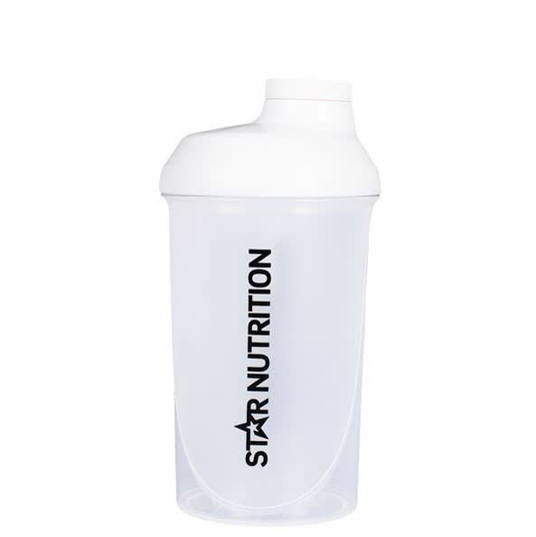
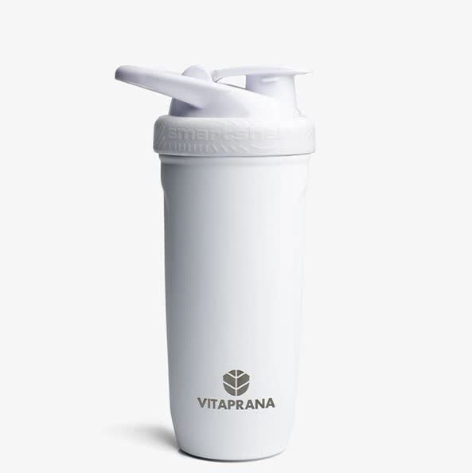
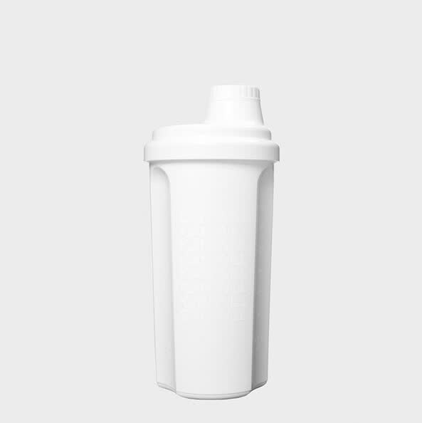
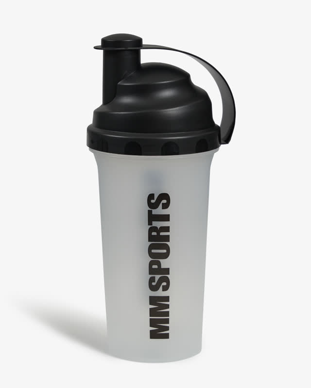
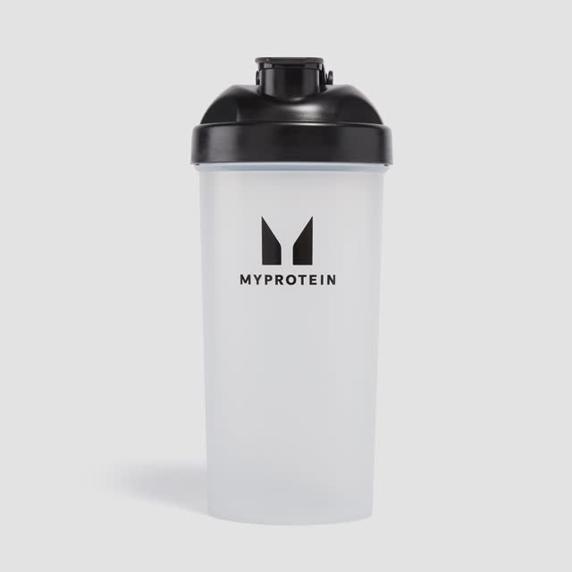
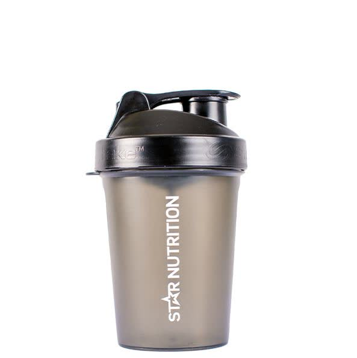
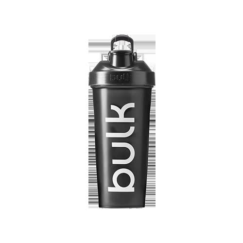
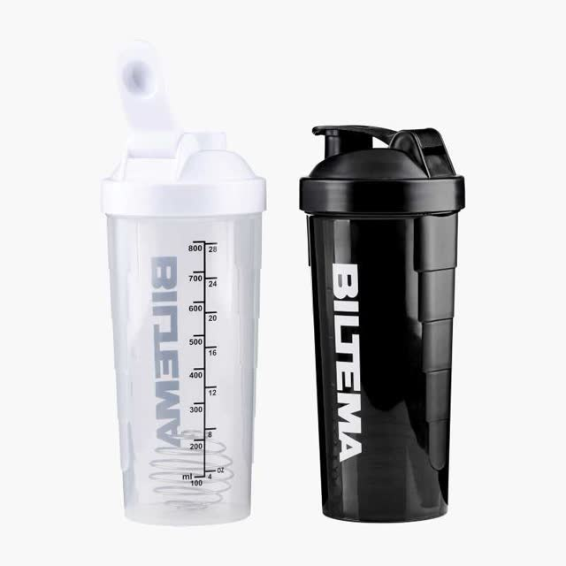
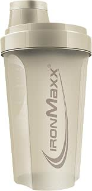

| Źródło | Status | Metoda / uwagi |
|---|---|---|
| Gymgrossisten (gymgrossisten.com) | ✅ | Demandware JSON z listingu + PDP (curl/Lightpanda) |
| Bodystore (bodystore.com) | ✅ | sitemap + PDP + koszyk (Lightpanda + browser) |
| XXL (xxl.se) | ✅ | Lightpanda — 5 shakerów, wszystkie „slutsåld online" |
| MM Sports (mmsports.se) | ✅ | curl — 38 shakerów |
| Proteinbolaget | ✅ | Shopify suggest.json — 26 shakerów |
| Myprotein.se | ✅ | JSON-LD ItemList — 8 shakerów |
| Bulk.com/se | ✅ | Lightpanda (JS render) — 6 shakerów |
| Rusta | ❌ brak | curl+Lightpanda — brak shakerów |
| Clas Ohlson | ❌ brak | curl+Lightpanda — brak shakerów |
| Prisjakt / Pricerunner | ❌ | Cloudflare/Klarna 403 (blokada IP z Pi) |
| Decathlon.se | ❌ | redirect na stronę korporacyjną / cookie-wall |
| Amazon.se | ✅ | Lightpanda — IronMaxx 700 ml 52,58 kr (najtaniej) |
| Stadium (+ Outlet) | ❌ brak | browser tool — „Inga träffar", brak shakerów |
| Biltema | ✅ | browser tool — Shaker 0,8L 49,90 kr (Bredden ~5 km) |
| Dollarstore / ÖoB / ICA | ❌ brak | brak shakerów (ÖoB blokada 454) |
| Gymvaruhuset, CoreNutrition, Fitnessgrossisten | ❌ | nie sklep / domena parkowana / brak dostępu |
| Zdj. | Sklep | Produkt | Poj. | Kolor | Cena | Dostawa | Link |
|---|---|---|---|---|---|---|---|
 |
Bodystore | Star Nutrition Gear Shaker Vit 🥇 najtaniej/szt | 600 ml | Biały | 12 kr 39 kr | 49 kr; 0 kr od 199 kr | link |
| Gymgrossisten | Star Nutrition Shaker Vit (ten sam produkt!) | 600 ml | Biały | 20 kr 39 kr | 59 kr; 0 kr od 499 kr | link | |
 |
Gymgrossisten | Vitaprana Stainless Steel Shaker White | 900 ml | Biały | 104 kr | 59 kr; 0 od 499 | link |
 |
Gymgrossisten / Bodystore | ICANIWILL (ICIW) Shaker Vit | 500 ml | Biały | 44 kr | — | link |
| — | XXL | Nordic Nutrition Shaker 700 ml Vit | 700 ml | Biały | 42 kr | — (tylko w varuhus) | link |
 |
MM Sports | MM Sports Original Shaker White | 700 ml | Biały | 59 kr | 0 kr od 499 kr | link |
 |
Myprotein.se | Myprotein Plastic Shaker Clear/Black (ocena 4.13/395) | 600 ml | Biało-przezroczysty | 41 kr | wg progu | link |
| — | Proteinbolaget | BiotechUSA Wave Shaker | 600 ml | — | 39 kr | 0 kr od 99 kr | link |
| — | Proteinbolaget | Stacker2 Europe Shaker Bottle | 600 ml | — | 39 kr | 0 kr od 99 kr | link |
 |
Gymgrossisten / Bodystore | Star Nutrition Shaker Svart (czarny, ten sam) | 600 ml | Czarny | 27 kr / 29 kr | — | link |
 |
Bulk.com/se | Iconic Shakerflaska | 750 ml | Czarny | 69 kr | wg progu | link |
Uwaga: ceny Gymgrossisten/Bodystore to promocje Black Week (mogą zniknąć). „Dostawa" wg danych porównywarki Aposmart; dokładna kwota zależy od kodu pocztowego i pokazuje się w kasie.
| Wariant | 5 × cena | Dostawa | RAZEM | za szt. | Uwaga |
|---|---|---|---|---|---|
| Bodystore Star Nutrition Vit 600 | 60 kr | 49 kr | 109 kr | 21,8 kr | 12 kr/szt. tylko z darmową dostawą |
| Gymgrossisten Star Nutrition Vit 600 | 100 kr | 59 kr | 159 kr | 31,8 kr | dostawa 59 kr; darmowa ≥499 |
| Proteinbolaget BiotechUSA/Stacker2 600 | 195 kr | 0 kr | 195 kr | 39 kr | zero kombinowania z progiem |
| MM Sports Original White 700 | 295 kr | 0 kr | 295 kr | 59 kr | darmowa od 499 |
| Bodystore ×17 szt. (próg) | 204 kr | 0 kr | 204 kr | 12 kr | najlepsza cena/szt — ale 17 szt. |
| Gymgrossisten ×25 szt. (próg) | 500 kr | 0 kr | 500 kr | 20 kr | próg darmowej 499 |
Najbliższy sklep z jakimkolwiek shakerem: Biltema Bredden (~5 km od Upplands Väsby). XXL w Barkarby (~12 km) ma zero shakerów na stanie.
| Zdj. | Sklep | Produkt | Poj. | Cena | Dostępność / dystans | Link |
|---|---|---|---|---|---|---|
 | Biltema | Shaker 0,8 liter ✅ lokalny #1 | 800 ml | 49,90 kr | ✅ Bredden ~5 km (Upplands Väsby), też Veddesta/Kungsängen | link |
| — | XXL | SportsDirect Shaker Bottle Blå | 650 ml | 55 kr (2 för 95) | ✅ Arninge/Bromma ~14–18 km | link |
| — | XXL | Nordic Nutrition Shaker Vit | 700 ml | 42 kr | ⚠️ tylko Länna ~38 km (2 szt.) | link |
| — | XXL | XXL Shaker 0,7L Svart | 700 ml | 10 kr | ❌ tylko Göteborg/Skellefteå | link |
 | Amazon.se | IronMaxx Protein Shaker Sandstone Beige | 700 ml | 52,58 kr | online (próg darmowej ~229 kr) | link |
Brak shakerów w: Rusta, Dollarstore, Stadium (+Outlet), Clas Ohlson, ÖoB, ICA. Decathlon nie ma sklepu w Szwecji.
| Sklep | 775/780 g | 2 kg | Dostawa | Próg darmowej |
|---|---|---|---|---|
| Gymgrossisten | 395 kr 549 | 885 kr 1149 | 59 kr | ≥499 kr |
| Proteinbolaget | 399 kr | 885 kr | 0 kr od 99 | ≥99 kr |
| Bodystore | 466,65 kr | 976,65 kr | 49 kr | ≥199 kr |
| MM Sports | 519 kr | — (brak 2 kg) | 0 kr od 499 | ≥499 kr |
Ceny dla wariantu Extreme Milk Chocolate (nie „Double Rich Chocolate" — to inny smak). Gymgrossisten/Proteinbolaget: Black Week. W SE ten produkt to 775/780 g i 2 kg (2 kg = 5 lb, faktyczna waga ~2,27 kg). Amazon.se: brak potwierdzonej oferty EMC (trafiony listing 312 kr to 620 g Double Rich Chocolate).
| Wariant | Razem | Dostawa | Komentarz |
|---|---|---|---|
| Gymgrossisten: 2 kg + 780 g + 5 shakerów | 1380 kr | 0 kr | najtaniej łącznie (whey 1280 + shakery 100) |
| Gymgrossisten: 2 kg + 5 shakerów | 985 kr | 0 kr | whey 885 + shakery 100 |
| Gymgrossisten: 780 g + 6 shakerów | 515 kr | 0 kr | 5 shakerów = 495 → +59 dostawa; 6-ty shaker (20) zbija dostawę do 0 → netto taniej o 39 |
| Proteinbolaget: 2 kg + 5 shakerów | 1080 kr | 0 kr | shakery po 39 kr |
| Proteinbolaget: tylko whey 2 kg | 885 kr | 0 kr | najlepsze gdy bez shakerów |
| Gymgrossisten: tylko whey 2 kg | 944 kr | 59 kr | — |
Metodologia: curl (Chrome-146 UA) → Lightpanda CDP (JS render) → browser tool (koszyk). Destylaty: memory/research/shakers-2026-11-24/raw/. Miniatury: reports/img/shakers-2026-11-24/ (≤640px, lokalne). Vision-check miniatur: ✅ (7/7 zgodne).